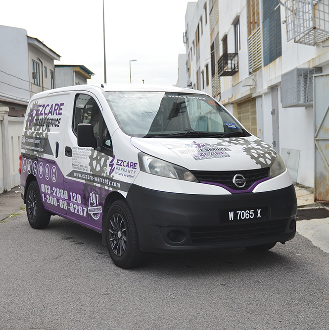
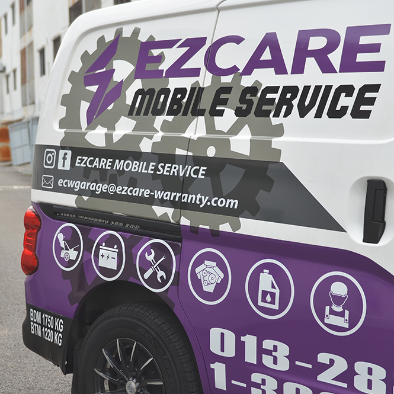

Mobile Service


WE ARE HERE FOR YOU
With ECW Mobile Service, we offer you the convenience of knowing exactly when your vehicle will be serviced and
ready to go.
You can arrange your mechanic on your time schedule and know what you’re going to be paying for and
when it’s going to be completed.
There is no need to arrange alternative transport or juggle your schedule to fit
in drop off and pick ups at your regular workshop.
So if your vehicle is need of a service and you have been
struggling to find the time to get to your local mechanic, just set an appointment with us and we will come to
your place.
PROFESSIONAL 10 POINT CHECK
Computer Diagnostic Test
Electronic Systems Check
Fluid Level Check
Leakage Check
Windscreen Wiper Blades Check
Water Levels Check
Tyres Condition, Pressure & Tread Depth Check
Air Conditioning System Check
Brake System Check
Instrumental & Gauges Panel Check
OUR MOBILE SERVICE UNIT


 MAKE your APPOINTMENT NOW
MAKE your APPOINTMENT NOW